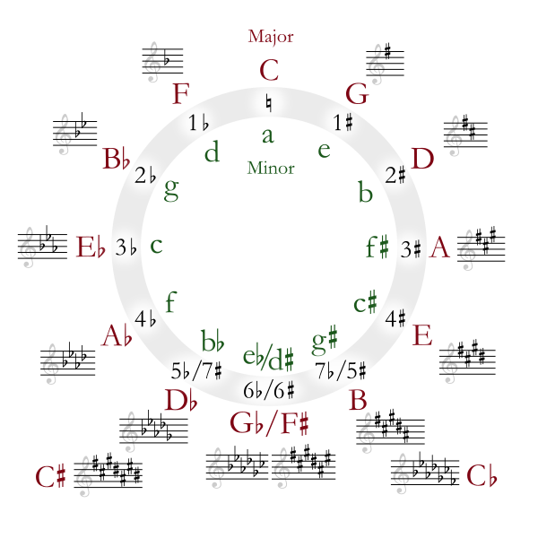

When we started Lesson 1, we said: You’ve probably heard people say things like “It’s in the key of G” or “It’s in A.” You may even have said things like that yourself. But, what exactly is a key and what does it mean to be in one and why do I care?
Finally, we are going to be able to answer that question. When we say we are in the key of C, we are saying that the notes and chords we play should all come from the C major scale. (There are exceptions, but that’s a story for another day.)
If we used our formula and determined that the D major scale is:
D E F♯ G A B C♯ D
Then, when we say we are in the key of D, we are saying that the notes and chords we play should all come from notes of the D major scale.
If we played an F♯ while in the key of C, it would sound weird, off, bad. But, if we play an F♯ in the key of D, it sounds normal, on, good.
So, we know what all the notes are and we know how we might go about figuring out what subset of those notes are in a key. We could do this for every one of the twelve notes. But, surely someone has done all this work for us, right? Figured out all of the keys? Yes, and we can use a tool that has been around a long time to see them (the tool is good for many additional things, too). The name of this tool won’t seem relevant for what we’re doing, but it’s a good name— you’ll just have to trust me. This tool is called the Circle of Fifths. Here’s what it looks like:

Wow—that’s kinda scary-looking. But, we will only use it for a few points. Without explaining these points (yet), let’s just list some things that the Circle of Fifths is telling us. For now, we’ll just trust they are true.
You might be thinking, “there are only twelve notes, shouldn’t there only be 12 keys?” It’s a good question. If you look again at the Circle of Fifths, you will notice that some of the keys have two, for example: C♯ and D♭. We talked before about how the same pitch (the same key on the piano) might have two different names - they are enharmonic. Well, we also have enharmonic keys. Just as a note might sound the same, but we call it two different things, the key sounds the same to our ears, but we talk about it in two different ways. If we are in the key of D♭ (one of the flat keys), we refer to the 6th as a B♭m. However, if we are in the key of C♯ (one of the sharp keys), we refer to the 6th as an A♯m. They both have the same notes and they sound the same, but we name them according to the key.